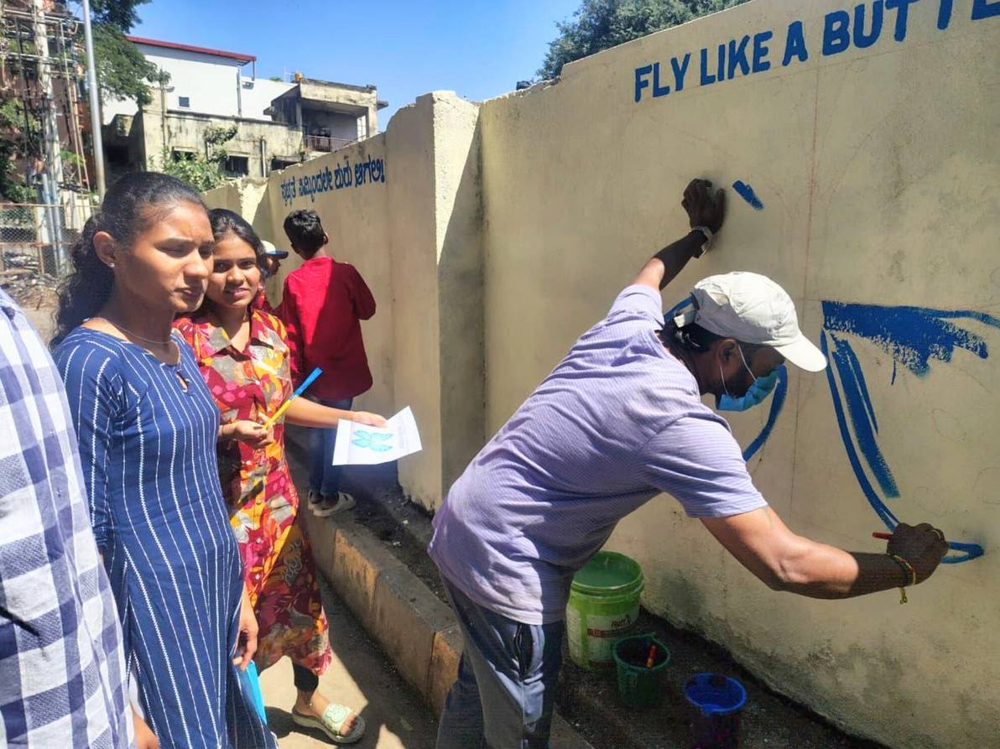
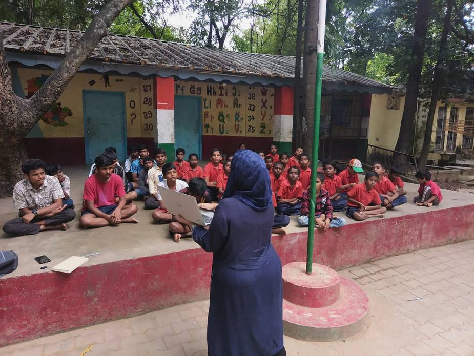
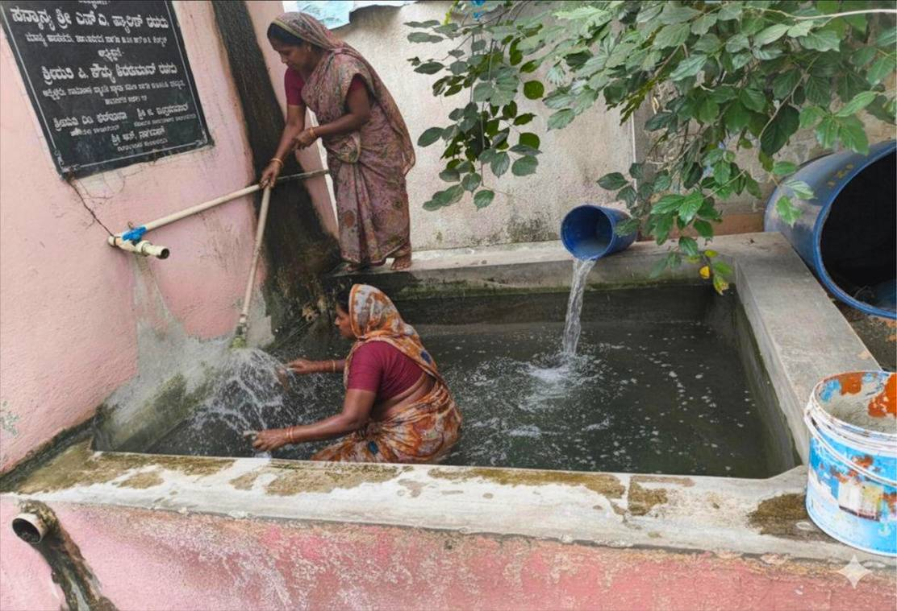
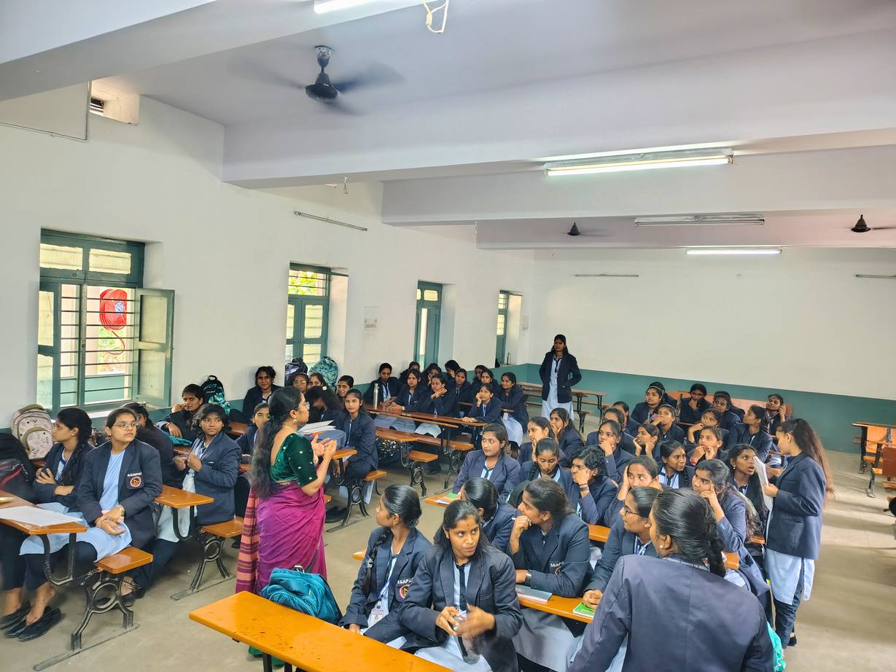

Solid waste management
Households had little guidance on separating wet and dry waste, collection was irregular, and many homes had no bins, so waste piled up in black spots.
Door to door, bin by bin
The team surveyed households, distributed wet and dry waste bins, and followed up for 15 days to make sure waste was segregated and collected. With residents and BBMP sanitation workers they cleaned dumping sites, planted them and painted walls with environmental messages. Early-morning monitoring with BBMP teams strengthened collection.
Team: Deekshitha and Manikanta

Using trusted spaces
The second team took waste awareness into temples, mosques, churches, madrasas, schools and hostels. Games, storytelling, quizzes and mapping made the sessions lively, and support from faith leaders helped messages stick as part of everyday values.
Team: Sneha and MohammedWater safety and conservation
Communities relied on poorly maintained water sources, and knew little about safe storage, hygiene or conservation.
Fixing shared water, with women leading
- Borewell camera inspection found blockages at 25 feet affecting water quality.
- Community tank cleaning with the local women's collective made stored water safer.
- A protective lid now keeps the tank free from outside pollution.
- Water literacy sessions gave women a safe space to discuss storage, hygiene and conservation.


A plan for safe water at school
The team assessed the school site, tested water quality and found the existing purifier too costly to maintain. After visiting a model school with rainwater harvesting, they proposed a harvesting system and documented rooftop measurements and technical data for future teams.
Team: Bhagat and SufiyaAcross both settings, water teams ran eight sessions on safe water, menstrual hygiene and sanitation, reaching over 200 students and women, and escalated drainage and pipeline problems to BBMP ward officials and BWSSB.
Workshops in 29 institutions
Alongside the team projects, workshops in 29 institutions across Shanthinagar reached 2,643 young people by November 2025. Three modules covered community issues and self-analysis, solid waste management, and water scarcity and conservation, using community mapping, segregation exercises, quizzes, action planning and personal climate pledges.